some example unit circle problems!
Please DON’T just blaze through all of these problems—please do these thoughtfully and slowly. What I mean by that is: I want you do to try to work out these trig functions from the basics, in the same sort of procedural way that I outline and give an example of in the notes. I don’t want you to just “memorize the unit circle.” Please please don’t do that—math isn’t about memorization! Rather, we want to understand, deeply, how these things work. To use a CS/Silicon Valley phrase: we want to go down to the bare metal!
\(\sin(0) = \,\,???\)
OK, let’s draw this angle on the unit circle! 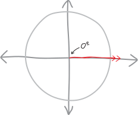 Not much to draw. Meanwhile, we know that the \(x\) and \(y\)-coordinates of the point where that line intersects the unit circle will tell us the sine and cosine of the angle, respectively. 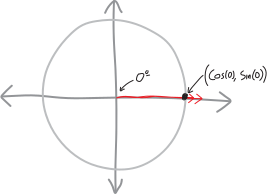 Sine is the \(y\)-coordinate… and here the \(y\)-coordinate is obviously zero. Nothing fancy required! (Also, we get the cosine for free: the \(x\)-coordinate of this point is \(1\), so then \(\cos(0)\) is \(1\)! 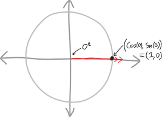 \[\boxed{ \sin(0) =0 }\]
\(\cos(5\pi/6) = \,\,???\)
Here’s an angle whose trig functions we wouldn’t be able to figure out if we just defined trig functions using triangles!!! \(5\pi/6\) is a little less than \(6\pi/6\), i.e. a little less than \(\pi\), i.e. a little less than \(180^\circ\). In particular, it’s like \(150^\circ\). Do you know any right triangles with an angle of \(150^\circ\)? No! Of course not!!! Thus the utility of our broader, expanded definition of trig functions: we can evaluate the trig functions of angles BIGGER than \(90^\circ\), or less than \(0^\circ\)! Anyway, drawing the angle \(5\pi/6\), we have: 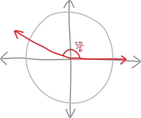 If we can find the \(x\) and \(y\)-coordinates of this point, we’ll find the cosine and sine! 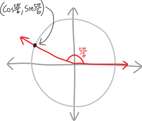 But how? How do we figure out the coordinates of that point? Agh. What a conundrum.
Oh! I have an idea! That little sliver between the angle and the \(x\)-axis is \(\pi/6\): 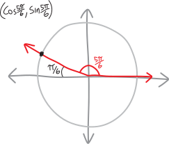 And that reminds me of our \(30-60-90\) special right triangle—I mean, our \(\pi/6-\pi/3-\pi/2\) special right triangle: 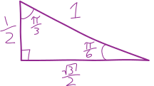 We know all of its side lengths, and we know that it has a \(\pi/6\) angle. That means we could slide it into place, right there on our unit circle. It’d fit in the \(\pi/6\) angle, and it’d also touch that magic point on the unit circle, whose coordinates are the sine and cosine of \(5\pi/6\). So then, since we know its side lengths, we’d be able to figure out the coordinates of that point!!! Let’s try it: 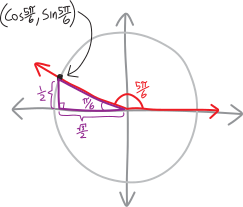 We know the side lengths of the triangle, so we know the coordinates of the magic point!!! The horizontal distance on the bottom/\(x\) is \(\sqrt3/2\), but it’s going in the negative direction, so the \(x\)-coordinate is \(-\frac{\sqrt{3}}{2}\). And the vertical distance to the point is \(1/2\), in the positive direction, so the \(y\)-coordinate is \(+1/2\): 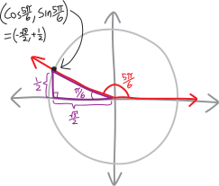 And so then we know: \[\cos(5\pi/6) = -\frac{\sqrt{3}}{2}\] \[\sin(5\pi/6) = +\frac{1}{2}\] Yay! \[\boxed{ \cos(5\pi/6) = -\frac{\sqrt{3}}{2} }\]
\(\sin(7\pi/4) = \,\,???\)
OK, once again we have an angle whose trig functions we can’t evaluate without using a unit circle! \(7\pi/4\) is a little less than \(8\pi/4\), which is \(2\pi\), which is \(360^\circ\), and \(\pi/4\) is \(45^\circ\), so then \(7\pi/4\) is \(315^\circ\). Halfway between the \(x\)- and \(y\)-axes in the lower-right quadrant! Let’s draw it: 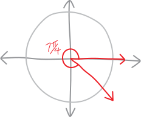 OK, so, to figure out the sine of \(7\pi/4\), we nede to figure out the \(y\)-coordinate of this point: 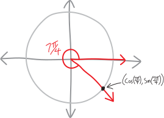 But how? Hmm. If we think about that little leftover sliver of an angle, it’s \(\pi/4\): 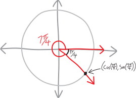 But that should remind us of our beloved \(45-45-90\)—I mean, \(\pi/4-\pi/4-\pi/2\)—special right triangle!!!! 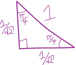 We know all its side lengths! So if we slide it in here (I guess we have to flip it upside-down first), we’ll be able to find the \((x,y)\)-coordinates of that point! 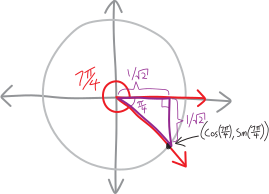 OK! So the \(x\)-coordinate of this point is \(1/\sqrt2\) away from the origin, in the positive direction, so it’s \(+1/\sqrt2\). And the \(y\)-coordinate is also \(1/\sqrt2\) away from the origin, but in the negative direction, so it’s \(-1/\sqrt2\): 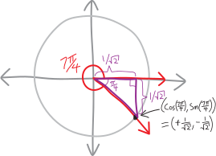 Yay! So then the sine of \(7\pi/4\) is \(-1/\sqrt2\). \[\boxed{ \sin(7\pi/4) = -\frac{1}{\sqrt{2}}} \]
\(\cos(5\pi/3) = \,\,???\)
OK, another fun angle!!! Let’s draw it: 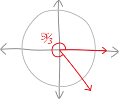 OK, so, if we can find the \((x,y)\)-coordinates of where the angle touches the circle, we’ll find the cosine and sine of \(5\pi/3\)! 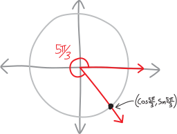 Hmmm, how to do that? There’s a little wedge of \(\pi/3\) that we could probably shove our \(\pi/3-\pi/6-\pi/2\) special right triangle into! 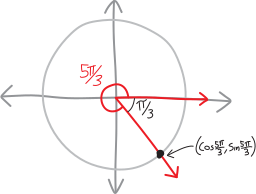 Let’s do that: 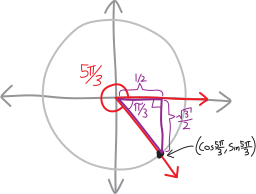 OK! So now we can find the coordinates of the point! 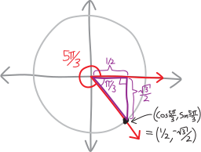 And thus: \[\boxed{ \cos(5\pi/3) = +\frac{1}{2} } \]